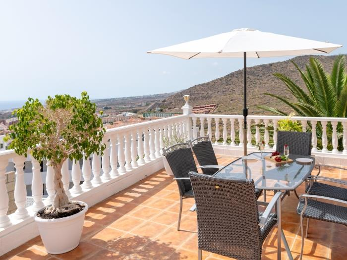
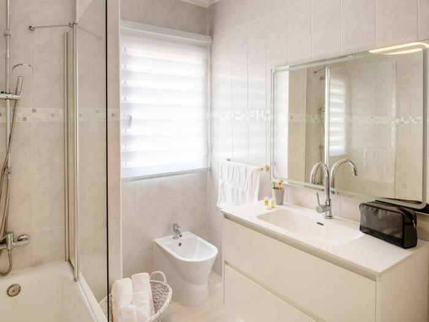
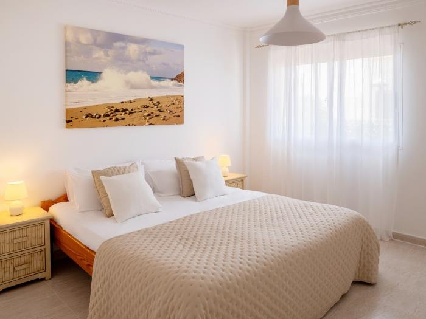
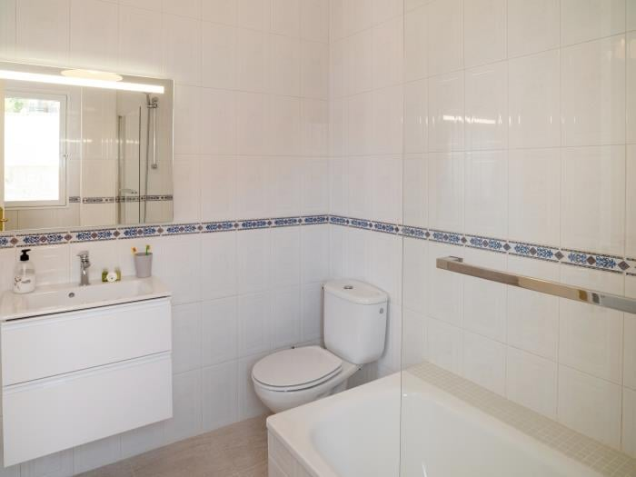
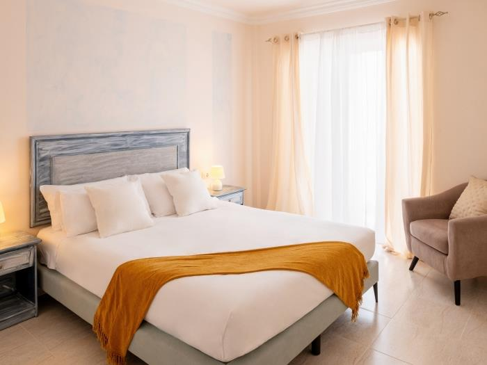
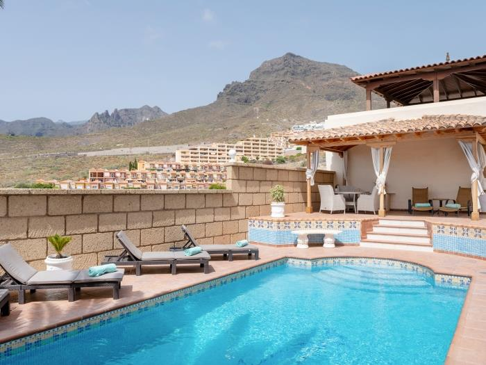

Galleria







Costa Adeje e' sinonimo di turismo di lusso a Tenerife: hotel 5 stelle, ristoranti gourmet, spiagge curate e un'atmosfera sofisticata che attira viaggiatori esigenti da tutto il mondo. Questa villa si inserisce perfettamente in quel contesto, offrendo un'esperienza privata e riservata ai massimi livelli.
Architettura moderna con linee nette, finiture di altissima qualita', piscina privata con vista panoramica sull'oceano Atlantico e giardino curato: tutto cio' che ci si aspetta da una villa di pregio in una delle destinazioni piu' esclusive delle Canarie.





La scelta ideale per chi vuole il meglio di Costa Adeje senza rinunciare alla privacy di una villa privata. Spazio, lusso e vista sull'Atlantico in un unico indirizzo.
Contattaci per disponibilita' e prezzi
💬 Contattaci su WhatsApp